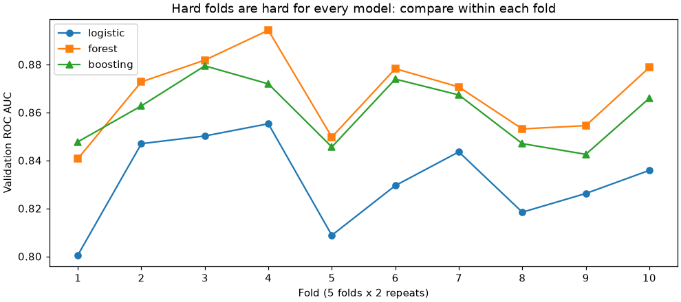
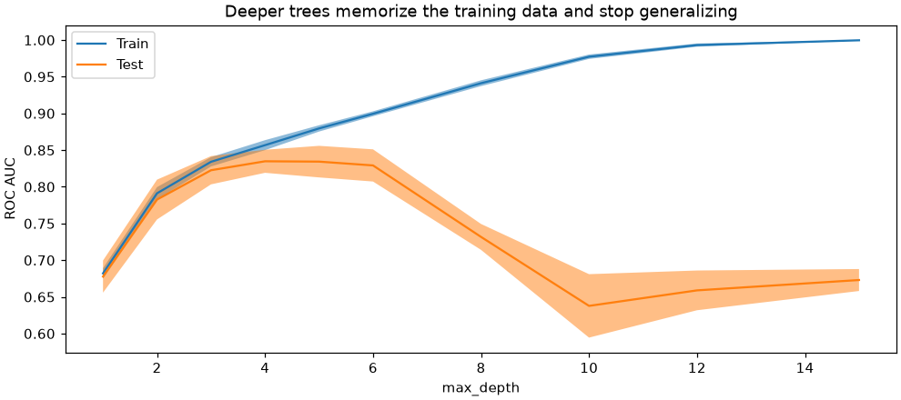
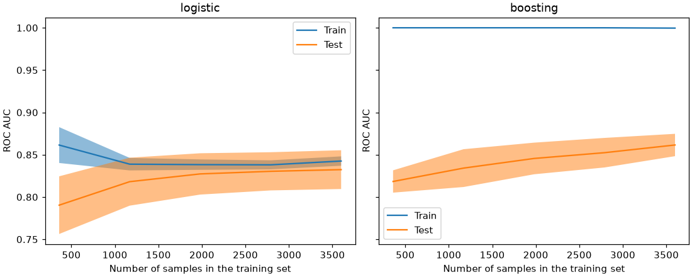

📊 Lesson 6.1: Model Selection and Learning Curves
Choose between models with evidence instead of one lucky number, and learn to read the two charts that tell you whether more data, a more flexible model or a simpler one will help.
🎯 Learning Objectives
By the end of this lesson, you will be able to:
- Compare several models fairly with
cross_validate: the same preprocessing pipeline, the same folds and the same metric, reporting the spread and the fit time - Decide whether a gap between two models is bigger than the noise, using paired per-fold differences
- Draw a validation curve with
ValidationCurveDisplayand point to where a model moves from underfitting to overfitting - Draw a learning curve with
LearningCurveDisplayand say whether more data or a more flexible model is the better next step - Make a final choice you can defend, then score it once on the untouched test set
In This Lesson
🧭 Choosing a Model Is a Measurement
By now you have trained logistic regression, nearest neighbors, single trees, random forests and gradient boosting on the same Pinecrest churn data. Each one printed a score, and the scores were different. The obvious question is "which one should Pinecrest use?" The obvious answer, "the one with the highest number", is right surprisingly rarely, because every one of those numbers came with noise you could not see.
💡 Mental Model: Testing Tents
Imagine Pinecrest's gear team choosing which tent to stock. If they pitch tent A on a calm night and tent B in a storm, the result says more about the weather than the tents. A fair test pitches every tent at the same campsites on the same nights, many nights in a row, and compares them night by night. One wet night where tent A leaked a little is not a verdict; tent A leaking on nine nights out of ten is.
In machine learning the campsites are cross-validation folds, the nights are repeats, and the leaks are scores. This lesson is about running that test properly and then asking two follow-up questions the gear team would ask: is the winner's margin real, and what would make the winner better?
Model selection rests on three habits, one for each question:
- Which is best? Score every candidate on identical folds, with the metric that matches the business problem, and look at the spread, not only the mean.
- Is the gap real? Compare candidates fold by fold, so that easy and hard folds cancel out.
- What would help? Read a validation curve (one setting turned up and down) and a learning curve (more and more training data) to diagnose underfitting and overfitting.
🤔 Why This Matters
A model you deploy will be judged on customers it has never seen. If you pick it because it won a noisy contest by 0.002, you may ship a slower, harder-to-explain model that is not actually better. Worse, if you pick it by peeking at the test set, the score you report will be too optimistic, and the people who rely on it will plan around a number that will not hold. The habits in this lesson protect you and them.
📂 One Recipe for Every Candidate
A fair contest starts with identical inputs. Load the churn table, use the 11 numeric and 5 categorical features from Module 2 (no cancellation_reason: that is the leak from Lesson 1.2), make the usual split, and write the preprocessing once as a function so every candidate gets its own fresh copy.
import numpy as np
import pandas as pd
import matplotlib.pyplot as plt
from sklearn.model_selection import train_test_split
from sklearn.compose import ColumnTransformer
from sklearn.pipeline import make_pipeline
from sklearn.impute import SimpleImputer
from sklearn.preprocessing import StandardScaler, OneHotEncoder
customers = pd.read_csv("data/customers_churn.csv")
numeric = ["tenure_months", "orders_12m", "spend_12m", "avg_order_value", "days_since_last_order",
"returns_12m", "return_rate", "support_tickets_12m", "discount_share", "app_user",
"email_opens_90d"]
categorical = ["home_store", "region", "age_group", "loyalty_tier", "preferred_category"]
X = customers[numeric + categorical]
y = customers["churned"]
X_train, X_test, y_train, y_test = train_test_split(X, y, test_size=0.25, stratify=y, random_state=42)
def make_preprocess():
return ColumnTransformer([
("num", make_pipeline(SimpleImputer(strategy="median"), StandardScaler()), numeric),
("cat", make_pipeline(SimpleImputer(strategy="most_frequent"),
OneHotEncoder(handle_unknown="ignore")), categorical),
])
print(X_train.shape, X_test.shape)
print(f"churn rate in training data: {y_train.mean():.3f}")Output
(4500, 16) (1500, 16)
churn rate in training data: 0.165Now the candidates. Each is a Pipeline (preprocessing, then a model), so cross-validation refits the imputers, scaler and encoder inside every fold and nothing leaks from the validation rows. The DummyClassifier is there on purpose: every comparison needs a floor.
from sklearn.dummy import DummyClassifier
from sklearn.linear_model import LogisticRegression
from sklearn.ensemble import RandomForestClassifier, HistGradientBoostingClassifier
candidates = {
"baseline": make_pipeline(make_preprocess(), DummyClassifier()),
"logistic": make_pipeline(make_preprocess(), LogisticRegression(max_iter=1000)),
"forest": make_pipeline(make_preprocess(), RandomForestClassifier(
n_estimators=200, min_samples_leaf=5, n_jobs=-1, random_state=42)),
"boosting": make_pipeline(make_preprocess(), HistGradientBoostingClassifier(random_state=42)),
}
print(list(candidates))Output
['baseline', 'logistic', 'forest', 'boosting']Every model that uses randomness gets random_state=42, as everywhere in this course, so your scores match this page and, more importantly, so that rerunning a comparison gives the same answer. A comparison you cannot repeat is not evidence.
⚖️ A Fair Comparison
Lesson 1.3 used cross_val_score, which returns one score per fold. Its bigger sibling, cross_validate, returns a dictionary with the scores and the time each fit took, and it accepts several metrics at once. Pair it with a RepeatedStratifiedKFold splitter: 5 folds, repeated twice with a different shuffle, gives 10 scores per model instead of 5, which makes the spread easier to judge.
from sklearn.model_selection import RepeatedStratifiedKFold, cross_validate
cv = RepeatedStratifiedKFold(n_splits=5, n_repeats=2, random_state=42)
fold_scores = {}
summary = []
for name, model in candidates.items():
result = cross_validate(model, X_train, y_train, cv=cv, scoring="roc_auc")
fold_scores[name] = result["test_score"]
summary.append({"model": name,
"mean_auc": result["test_score"].mean(),
"std_auc": result["test_score"].std(),
"fit_seconds": result["fit_time"].mean()})
summary = pd.DataFrame(summary).set_index("model")
print(summary[["mean_auc", "std_auc"]].round(3))Output
mean_auc std_auc
model
baseline 0.500 0.000
logistic 0.832 0.017
forest 0.867 0.016
boosting 0.860 0.013Because the same cv object (with a fixed random_state) is passed to every call, all four candidates were trained and scored on exactly the same ten splits: the same campsites on the same nights. The metric is ROC AUC, because Pinecrest uses the model to rank customers (Lesson 1.4), and AUC measures ranking quality. The baseline's 0.500 is the "coin flip" floor; all three real models clear it by a wide margin.
Fit time is a real cost too, so look at it, but treat it as rough: it depends on your computer and on what else it is doing.
print(summary["fit_seconds"].round(2))Output (your numbers will differ)
model
baseline 0.04
logistic 0.17
forest 1.04
boosting 1.34
Name: fit_seconds, dtype: float64Two things in the score table deserve a second look. First, the default random forest scores a little higher than default gradient boosting, even though boosting was the star of Lesson 5.3. Second, the standard deviations (0.013 to 0.017) are about twice as large as the gap between the forest and boosting (0.007). Is the forest really better, or did it get lucky? That is the next section.
⚠️ The Test Set Stays Locked
Everything in this section used X_train only. The test set has not been touched, and it will be used exactly once, after the choice is made. If you compare models on the test set, you are choosing with it, and its score stops being an honest estimate of the future.
🎲 Is the Difference Real?
Some folds are simply harder than others: by chance, they hold more of the customers who are difficult to call. On a hard fold every model scores lower. Those shared ups and downs are most of the spread in each model's scores, and it has nothing to do with which model is better. Comparing models fold by fold removes it. Put the per-fold scores side by side and look:
folds = pd.DataFrame(fold_scores).drop(columns="baseline")
print(folds.round(3))Output
logistic forest boosting
0 0.801 0.841 0.848
1 0.847 0.873 0.863
2 0.850 0.882 0.879
3 0.855 0.894 0.872
4 0.809 0.850 0.846
5 0.830 0.878 0.874
6 0.844 0.871 0.867
7 0.818 0.853 0.847
8 0.826 0.854 0.843
9 0.836 0.879 0.866Read down the columns and the scores wander; read across a row and the three models move together. Plotting the folds makes it obvious:
fig, ax = plt.subplots(figsize=(9, 4), layout="constrained")
for name, marker in [("logistic", "o"), ("forest", "s"), ("boosting", "^")]:
ax.plot(range(1, 11), folds[name], marker=marker, label=name)
ax.set_xticks(range(1, 11))
ax.set_xlabel("Fold (5 folds x 2 repeats)")
ax.set_ylabel("Validation ROC AUC")
ax.set_title("Hard folds are hard for every model: compare within each fold")
ax.legend()
plt.show()
So the right quantity is the paired difference: in each fold, score of model A minus score of model B. The ups and downs cancel, and what is left is the models' real difference plus a much smaller amount of noise.
def paired(a, b):
diff = folds[a] - folds[b]
print(f"{a} - {b}: mean {diff.mean():+.4f}, std {diff.std():.4f}, "
f"{a} wins {(diff > 0).sum()} of {len(diff)} folds")
paired("boosting", "logistic")
paired("forest", "boosting")Output
boosting - logistic: mean +0.0289, std 0.0113, boosting wins 10 of 10 folds
forest - boosting: mean +0.0070, std 0.0078, forest wins 9 of 10 foldsNow the picture is sharp. Boosting beats logistic regression in every fold, by about 0.03: a real difference, and it matches what you know about the data (churn depends on thresholds and interactions that a straight line cannot draw from raw columns). The forest beats default boosting by less than 0.01, but it does so in nearly every fold, so it is consistent rather than lucky. Notice that the standard deviation of the forest-minus-boosting differences (0.008) is about half the standard deviation of either model's raw scores: pairing removed much of the noise.
💡 How Big Is "Big Enough"?
A quick, honest rule: a difference is worth acting on when the winner wins in most folds and the mean difference is clearly larger than its standard deviation divided by the square root of the number of folds. Be modest with formal tests: the training parts of different folds overlap, so the fold scores are not independent and a textbook t-test is overconfident. If two models are within noise of each other, stop arguing about the third decimal and choose on other grounds: speed, simplicity, ease of explanation, robustness.
✅ Keep the Default Boosting Result in Mind
Default HistGradientBoostingClassifier losing to a forest is not a law of nature. Its defaults are generous (31 leaves per tree, 100 rounds), and on 4,500 rows that can overfit. The learning curve later in this lesson shows the symptom, and Lesson 6.2 tunes it.
🎚️ Validation Curves: Turning One Knob
A validation curve answers "what happens as I make this model more flexible?" You choose one hyperparameter, try a range of values, and plot both the training score and the cross-validated score at each value. A decision tree's max_depth is the clearest knob there is: a depth-1 tree asks one question, a depth-15 tree asks up to fifteen in a row.
When the model is a pipeline, the hyperparameter name gets the step name in front, joined by a double underscore. make_pipeline names each step after its class in lowercase, so the tree's depth is decisiontreeclassifier__max_depth.
from sklearn.model_selection import StratifiedKFold, ValidationCurveDisplay
from sklearn.tree import DecisionTreeClassifier
tree_pipe = make_pipeline(make_preprocess(), DecisionTreeClassifier(random_state=42))
cv5 = StratifiedKFold(n_splits=5, shuffle=True, random_state=42)
depths = [1, 2, 3, 4, 5, 6, 8, 10, 12, 15]
fig, ax = plt.subplots(figsize=(9, 4), layout="constrained")
vc = ValidationCurveDisplay.from_estimator(
tree_pipe, X_train, y_train,
param_name="decisiontreeclassifier__max_depth", param_range=depths,
cv=cv5, scoring="roc_auc", score_name="ROC AUC", ax=ax,
)
ax.set_xlabel("max_depth")
ax.set_title("Deeper trees memorize the training data and stop generalizing")
plt.show()
curve = pd.DataFrame({"max_depth": depths,
"train_auc": vc.train_scores.mean(axis=1),
"validation_auc": vc.test_scores.mean(axis=1)})
print(curve.round(3).to_string(index=False))Output
max_depth train_auc validation_auc
1 0.682 0.678
2 0.791 0.783
3 0.834 0.823
4 0.857 0.835
5 0.880 0.834
6 0.899 0.829
8 0.941 0.732
10 0.977 0.638
12 0.993 0.659
15 1.000 0.673
💡 "Test" in the Legend Means the Validation Folds
The Display classes label the cross-validated score "Test", because inside each fold that part is held out for testing. It is not your test set: X_test is still locked away. This lesson says "validation" for those scores to keep the two apart.
Read the chart from left to right:
- Depth 1 to 3, underfitting (high bias). Both curves are low and close together. The tree is too simple to capture the pattern; it would do badly on any data, including the data it trained on.
- Depth 4 to 5, the sweet spot. The validation score peaks. The training score is a little higher, which is normal.
- Depth 6 and beyond, overfitting (high variance). The training score heads to a perfect 1.000 while the validation score drops sharply. The tree is memorizing individual customers, the noise along with the signal.
The gap between the two curves is the overfitting meter. You met the same pattern in Lesson 1.1's exercise on tree depth and in Lesson 3.2 as the bias-variance trade-off; the validation curve is the tool that draws it for any knob of any model.
💡 Prefer the Simpler Model When It Is a Tie
Depths 4 and 5 score within a hair of each other, and the fold spread is far larger than that hair. When a simpler setting is within noise of the best one, take the simpler one: it is faster, easier to explain, and less likely to have won by luck. A common formal version is the one-standard-error rule: choose the simplest setting whose score is within one standard error of the best. Exercise 4 has you apply it.
📈 Learning Curves: Would More Data Help?
A learning curve keeps the model fixed and changes the amount of training data. For each size it trains on that many rows and reports the training score and the cross-validated score. It answers a question managers ask all the time: "if we collected twice as much data, would the model get better?"
from sklearn.model_selection import LearningCurveDisplay
sizes = np.linspace(0.1, 1.0, 5)
fig, axes = plt.subplots(1, 2, figsize=(10, 4), sharey=True, layout="constrained")
curves = {}
for ax, name in zip(axes, ["logistic", "boosting"]):
curves[name] = LearningCurveDisplay.from_estimator(
candidates[name], X_train, y_train, train_sizes=sizes,
cv=cv5, scoring="roc_auc", score_name="ROC AUC", ax=ax,
)
ax.set_title(name)
plt.show()
for name, lc in curves.items():
print(name)
print(pd.DataFrame({"train_rows": lc.train_sizes,
"train_auc": lc.train_scores.mean(axis=1),
"validation_auc": lc.test_scores.mean(axis=1)}).round(3).to_string(index=False))Output
logistic
train_rows train_auc validation_auc
360 0.861 0.790
1170 0.839 0.818
1980 0.838 0.827
2790 0.838 0.830
3600 0.843 0.832
boosting
train_rows train_auc validation_auc
360 1.0 0.818
1170 1.0 0.834
1980 1.0 0.846
2790 1.0 0.852
3600 1.0 0.861
The two models tell opposite stories:
| Pattern | Diagnosis | What helps | What does not |
|---|---|---|---|
| Logistic: curves meet early and flatten at about 0.83 | High bias (underfitting): the model is too simple for the pattern | A more flexible model, or better features (for example a "days since last order above 150" flag) | More rows of the same data |
| Boosting: training score 1.0, validation still rising | High variance (overfitting), but it is learning real signal as data grows | More data, or regularization: fewer leaves, more rows per leaf, fewer rounds (Lesson 6.2) | A more flexible model |
This is why learning curves are worth the computing time. Without them you might spend a month collecting more customer history for the logistic model, which has already learned all it can. With them, you know that the next win for logistic regression lies in features, and the next win for boosting lies in taming it.
⚠️ Learning Curves Are Not Free
Five sizes times five folds is 25 fits per model. On large data or slow models, use fewer sizes, three folds, or a sample of the rows. The shape of the curve matters, not its third decimal.
🏁 Making the Call, Then Testing Once
The evidence so far: boosting and the forest are both clearly better than logistic regression; the default forest edges out default boosting consistently but by less than 0.01; boosting's learning curve suggests it would improve with regularization. Other things to weigh:
- Cost. The forest builds 200 deep trees; boosting builds 100 shallow ones. On larger data the difference in fit and prediction time can matter.
- Explainability. Logistic regression's coefficients are easy to show a manager. Tree ensembles need the tools of Module 7.
- Room to improve. A model with obvious headroom (boosting) is a better investment for tuning than one that is already near its ceiling.
For this lesson, take the forest as the current best default model. Fit it on the whole training set and open the test set, once:
from sklearn.metrics import roc_auc_score
final = candidates["forest"].fit(X_train, y_train)
test_auc = roc_auc_score(y_test, final.predict_proba(X_test)[:, 1])
print(f"cross-validated AUC: {summary.loc['forest', 'mean_auc']:.3f} +/- {summary.loc['forest', 'std_auc']:.3f}")
print(f"test AUC (one look): {test_auc:.3f}")Output
cross-validated AUC: 0.867 +/- 0.016
test AUC (one look): 0.861The test score lands within the cross-validated range: the selection process did not fool you. If it had landed far below, that would be a warning that something in the comparison leaked or that the test customers differ from the training ones. Either way, you report the test number, and you do not go back to change the model because of it. If you did, you would need a new test set to report honestly.
✅ The Model-Selection Checklist
Same preprocessing pipeline for all candidates. Same folds (one splitter object, fixed random_state). One metric chosen for the business question, decided before looking at results. A baseline in the table. Paired differences for close calls. Curves to decide what to try next. The test set opened once, at the end.
⚠️ Common Mistakes
Two of these raise an error that points straight at the fix. The other two raise nothing at all, which makes them the dangerous ones.
1. A Scorer Name That Does Not Exist
The real message is very long, because it lists every valid scorer name. This block catches it and prints its type, its start and its end:
try:
cross_validate(candidates["logistic"], X_train, y_train, cv=cv5, scoring="auc")
except ValueError as err:
message = str(err)
print(type(err).__name__)
print(message[:62], "...")
print("...", message[-18:])Output
InvalidParameterError
The 'scoring' parameter of cross_validate must be a str among ...
... Got 'auc' instead.What it means: InvalidParameterError is scikit-learn's kind of ValueError for an argument it does not accept. Scorers have exact names, and "auc" is not one of them. Fix: use "roc_auc". The full list is in sklearn.metrics.get_scorer_names(); error-type metrics appear with a neg_ prefix (such as "neg_log_loss") because scikit-learn always treats a bigger score as better.
2. Forgetting the Step Name in a Pipeline
from sklearn.model_selection import validation_curve
validation_curve(tree_pipe, X_train, y_train, param_name="max_depth", param_range=[2, 4], cv=cv5)Error
ValueError: Invalid parameter 'max_depth' for estimator Pipeline(steps=[('columntransformer',
...
DecisionTreeClassifier(random_state=42))]). Valid parameters are: ['memory', 'steps', 'transform_input', 'verbose'].The middle of the message (shortened here) prints the whole pipeline. What it means: a pipeline has no max_depth; its tree step does. Fix: prefix the step name and two underscores: decisiontreeclassifier__max_depth. To see every valid name, print sorted(tree_pipe.get_params()).
3. Each Model on Its Own Shuffle
Paired differences only work when the two models saw the same folds. Here is what happens to the forest-versus-boosting comparison if each model gets its own shuffle:
cv_a = RepeatedStratifiedKFold(n_splits=5, n_repeats=2, random_state=0)
cv_b = RepeatedStratifiedKFold(n_splits=5, n_repeats=2, random_state=1)
forest_a = cross_validate(candidates["forest"], X_train, y_train, cv=cv_a, scoring="roc_auc")["test_score"]
boosting_b = cross_validate(candidates["boosting"], X_train, y_train, cv=cv_b, scoring="roc_auc")["test_score"]
mismatched = pd.Series(forest_a - boosting_b)
print(f"mismatched folds: mean {mismatched.mean():+.4f}, std {mismatched.std():.4f}, "
f"forest wins {(mismatched > 0).sum()} of {len(mismatched)} folds")Output (no error, and that is the problem)
mismatched folds: mean +0.0073, std 0.0133, forest wins 6 of 10 foldsWhat happened: the mean difference is about the same, but the spread of the "paired" differences jumps from 0.0078 to 0.0133 and the forest now wins only 6 folds out of 10 instead of 9. Nothing is paired any more: each difference mixes the model gap with the luck of two different folds, and the consistent edge you measured earlier disappears into noise. Fix: create one splitter with a fixed random_state and pass the same object to every candidate. (Passing cv=5 to every call is also safe: without shuffling, the folds are the same each time.)
4. Crowning a Winner by the Third Decimal
ranked = summary.sort_values("mean_auc", ascending=False)
print(ranked[["mean_auc", "std_auc"]].round(4).head(2))Output (no error, and that is the problem)
mean_auc std_auc
model
forest 0.8674 0.0161
boosting 0.8604 0.0128What happened: sorting a table always produces a "winner", even when the top two are separated by a fraction of their standard deviations. A slide that says "forest: 0.867, boosting: 0.860, forest wins" hides the most important fact. Fix: report the spread next to every mean, check paired differences for close calls, and say "within noise" when it is.
🛠️ Project: The Churn-Model Bake-off
Pinecrest's care team calls customers from the top of a risk-ranked list, so what matters is how clean the top of the list is. Your job: run a fair bake-off of five candidates using average precision (Lesson 1.4: it rewards models whose highest-ranked customers really are churners), check whether the top two are really different, draw a learning curve for the winner, test it once, and save the results. Work in a new notebook called lesson_6_1_project. Allow about 35 minutes.
🛠️ Step 1: Load, split and write the preprocessing once (5 min)
Same features, same split, same preprocessing function as the lesson.
import numpy as np
import pandas as pd
import matplotlib.pyplot as plt
from sklearn.model_selection import train_test_split
from sklearn.compose import ColumnTransformer
from sklearn.pipeline import make_pipeline
from sklearn.impute import SimpleImputer
from sklearn.preprocessing import StandardScaler, OneHotEncoder
customers = pd.read_csv("data/customers_churn.csv")
numeric = ["tenure_months", "orders_12m", "spend_12m", "avg_order_value", "days_since_last_order",
"returns_12m", "return_rate", "support_tickets_12m", "discount_share", "app_user",
"email_opens_90d"]
categorical = ["home_store", "region", "age_group", "loyalty_tier", "preferred_category"]
X_train, X_test, y_train, y_test = train_test_split(
customers[numeric + categorical], customers["churned"],
test_size=0.25, stratify=customers["churned"], random_state=42)
def make_preprocess():
return ColumnTransformer([
("num", make_pipeline(SimpleImputer(strategy="median"), StandardScaler()), numeric),
("cat", make_pipeline(SimpleImputer(strategy="most_frequent"),
OneHotEncoder(handle_unknown="ignore")), categorical),
])
print(len(X_train), len(X_test))Output
4500 1500🛠️ Step 2: Line up five candidates (5 min)
Add nearest neighbors (Lesson 4.1) and a depth-5 tree (the sweet spot from the validation curve) to the lesson's line-up.
from sklearn.dummy import DummyClassifier
from sklearn.linear_model import LogisticRegression
from sklearn.neighbors import KNeighborsClassifier
from sklearn.tree import DecisionTreeClassifier
from sklearn.ensemble import RandomForestClassifier
models = {
"baseline": DummyClassifier(),
"logistic": LogisticRegression(max_iter=1000),
"knn_50": KNeighborsClassifier(n_neighbors=50),
"tree_d5": DecisionTreeClassifier(max_depth=5, random_state=42),
"forest": RandomForestClassifier(n_estimators=200, min_samples_leaf=5, n_jobs=-1, random_state=42),
}
pipes = {name: make_pipeline(make_preprocess(), model) for name, model in models.items()}
print(len(pipes), "candidates")Output
5 candidates🛠️ Step 3: Score them on identical folds (10 min)
One splitter, two metrics. Average precision is the deciding metric (chosen before looking); AUC is for context.
from sklearn.model_selection import RepeatedStratifiedKFold, cross_validate
cv = RepeatedStratifiedKFold(n_splits=5, n_repeats=2, random_state=42)
per_fold, rows = {}, []
for name, pipe in pipes.items():
res = cross_validate(pipe, X_train, y_train, cv=cv, scoring=["average_precision", "roc_auc"])
per_fold[name] = res["test_average_precision"]
rows.append({"model": name,
"ap_mean": res["test_average_precision"].mean(),
"ap_std": res["test_average_precision"].std(),
"auc_mean": res["test_roc_auc"].mean()})
board = pd.DataFrame(rows).set_index("model").sort_values("ap_mean", ascending=False)
print(board.round(3))Output
ap_mean ap_std auc_mean
model
forest 0.615 0.031 0.867
tree_d5 0.539 0.038 0.842
logistic 0.524 0.031 0.832
knn_50 0.518 0.033 0.834
baseline 0.165 0.000 0.500The baseline's average precision equals the churn rate, 0.165: that is what a list in random order scores. Every real model is several times better, and the forest leads.
🛠️ Step 4: Is the leader really ahead? (5 min)
Compare the top two fold by fold.
first, second = board.index[:2]
diff = per_fold[first] - per_fold[second]
print(f"{first} - {second}: mean {diff.mean():+.3f}, std {diff.std():.3f}, "
f"{first} wins {(diff > 0).sum()} of {len(diff)} folds")Output
forest - tree_d5: mean +0.075, std 0.021, forest wins 10 of 10 foldsA lead in every fold: the forest's advantage on the top of the list is consistent, not luck.
🛠️ Step 5: Learning curve for the winner (5 min)
Would more customer history help the forest? Use three sizes and five folds to keep it quick.
from sklearn.model_selection import StratifiedKFold, LearningCurveDisplay
fig, ax = plt.subplots(figsize=(9, 4), layout="constrained")
lc = LearningCurveDisplay.from_estimator(
pipes[first], X_train, y_train, train_sizes=[0.2, 0.6, 1.0],
cv=StratifiedKFold(n_splits=5, shuffle=True, random_state=42),
scoring="average_precision", score_name="Average precision", ax=ax)
ax.set_title(f"Learning curve: {first}")
plt.show()
print("training rows:", lc.train_sizes)
print("validation AP:", lc.test_scores.mean(axis=1).round(3))Output
training rows: [ 720 2160 3600]
validation AP: [0.551 0.608 0.619]The validation score rises from 0.551 to 0.608 to 0.619: still rising at full size, but flattening. More customer history would probably help a little, not a lot. Note that in your report.
🛠️ Step 6: Test once, save the results (5 min)
Fit the winner on all training rows, score the test set a single time, and save the leaderboard for the team.
from sklearn.metrics import average_precision_score
winner = pipes[first].fit(X_train, y_train)
test_ap = average_precision_score(y_test, winner.predict_proba(X_test)[:, 1])
board.round(4).to_csv("bakeoff_results.csv")
print(f"""Churn-model bake-off
Candidates compared : {len(board)} on {cv.get_n_splits()} identical folds
Winner : {first} (CV AP {board.loc[first, 'ap_mean']:.3f} +/- {board.loc[first, 'ap_std']:.3f})
Runner-up : {second} (CV AP {board.loc[second, 'ap_mean']:.3f})
Random-order list : AP {board.loc['baseline', 'ap_mean']:.3f}
Test AP (one look) : {test_ap:.3f}
Saved : bakeoff_results.csv""")Output
Churn-model bake-off
Candidates compared : 5 on 10 identical folds
Winner : forest (CV AP 0.615 +/- 0.031)
Runner-up : tree_d5 (CV AP 0.539)
Random-order list : AP 0.165
Test AP (one look) : 0.606
Saved : bakeoff_results.csv✅ Project Completion Checklist
- All five candidates are pipelines built from the same preprocessing function
- One
RepeatedStratifiedKFoldobject withrandom_state=42produced every score - Your leaderboard shows the mean and the spread, with the baseline at the bottom (AP 0.165)
- You checked the top two with paired per-fold differences
- You drew a learning curve for the winner and wrote one sentence on whether more data would help
- The test set was used exactly once, after the choice, and
bakeoff_results.csvis saved
🏋️ Hands-on Exercises
These continue in the project notebook, so pipes, make_preprocess, X_train and y_train already exist.
🏋️ Exercise 1: Does the Metric Change the Winner?
Score the logistic and knn_50 pipelines with 5-fold stratified cross-validation (shuffle=True, random_state=42) on two metrics: "roc_auc" and "average_precision". Which model wins on each? What does that tell you about deciding the metric before looking at results?
💡 Hint
Pass scoring=["roc_auc", "average_precision"] to cross_validate; the result has keys test_roc_auc and test_average_precision.
✅ Solution
from sklearn.model_selection import StratifiedKFold, cross_validate
cv5 = StratifiedKFold(n_splits=5, shuffle=True, random_state=42)
for name in ["logistic", "knn_50"]:
res = cross_validate(pipes[name], X_train, y_train, cv=cv5, scoring=["roc_auc", "average_precision"])
print(f"{name:9s} AUC {res['test_roc_auc'].mean():.4f} AP {res['test_average_precision'].mean():.4f}")Output
logistic AUC 0.8324 AP 0.5282
knn_50 AUC 0.8369 AP 0.5205Nearest neighbors wins on AUC, logistic regression on average precision, and both gaps are tiny next to the fold spread of about 0.02 to 0.03. So these two are tied, and with two metrics you can almost always find one that flatters the model you already like. That is exactly why the deciding metric is chosen from the business question first.
🏋️ Exercise 2: A Validation Curve for Neighbors
Draw a validation curve for the knn_50 pipeline over n_neighbors in [1, 5, 15, 50, 150, 400], scored by ROC AUC with cv5. Print the mean training and validation AUC for each value. Which end of the range overfits, and which underfits?
💡 Hint
The step created by make_pipeline for KNeighborsClassifier is called kneighborsclassifier. You can use validation_curve (numbers only) instead of the Display.
✅ Solution
from sklearn.model_selection import validation_curve
ks = [1, 5, 15, 50, 150, 400]
train_s, val_s = validation_curve(pipes["knn_50"], X_train, y_train,
param_name="kneighborsclassifier__n_neighbors", param_range=ks,
cv=cv5, scoring="roc_auc")
for k, tr, va in zip(ks, train_s.mean(axis=1), val_s.mean(axis=1)):
print(f"k={k:4d} train {tr:.3f} validation {va:.3f}")Output
k= 1 train 1.000 validation 0.627
k= 5 train 0.923 validation 0.763
k= 15 train 0.883 validation 0.812
k= 50 train 0.859 validation 0.837
k= 150 train 0.846 validation 0.836
k= 400 train 0.837 validation 0.833For nearest neighbors the knob runs the other way from tree depth: a small k is the flexible end. With k=1 each customer is its own nearest neighbor in the training data, so the training AUC is perfect and the validation AUC is poor: overfitting. As k grows the predictions smooth out and validation improves, then levels off; at very large k the model starts averaging over customers who are not alike, and the training and validation scores sink toward each other: underfitting.
🏋️ Exercise 3: Better Features for a Converged Model
The lesson's learning curve said logistic regression has converged, so more rows will not help but better features might. Test the second half of that claim: add a column lapsed = 1 when days_since_last_order is above 150, else 0, and compare the 5-fold AUC of logistic regression with and without it.
💡 Hint
Make copies of X_train with the new column, and a preprocessing ColumnTransformer whose numeric list includes "lapsed". The rest of the pipeline is unchanged.
✅ Solution
from sklearn.model_selection import cross_val_score
X_lapsed = X_train.assign(lapsed=(X_train["days_since_last_order"] > 150).astype(int))
pre_lapsed = ColumnTransformer([
("num", make_pipeline(SimpleImputer(strategy="median"), StandardScaler()), numeric + ["lapsed"]),
("cat", make_pipeline(SimpleImputer(strategy="most_frequent"),
OneHotEncoder(handle_unknown="ignore")), categorical),
])
plain = cross_val_score(pipes["logistic"], X_train, y_train, cv=cv5, scoring="roc_auc").mean()
with_flag = cross_val_score(make_pipeline(pre_lapsed, LogisticRegression(max_iter=1000)),
X_lapsed, y_train, cv=cv5, scoring="roc_auc").mean()
print(f"logistic AUC without the flag: {plain:.3f}")
print(f"logistic AUC with the flag : {with_flag:.3f}")Output
logistic AUC without the flag: 0.832
logistic AUC with the flag : 0.837One well-chosen column adds 0.005, as much as the last 1,600 rows added in the learning curve, and unlike more rows it can be repeated: each threshold or interaction you encode gives the straight-line model a shape it could not draw before. That is what "high bias: improve the features or the model" means in practice. Lesson 2.3 is full of features like this.
🏋️ Exercise 4: The One-Standard-Error Rule (Stretch)
Rerun the tree-depth validation curve with validation_curve over depths 1 to 10 (ROC AUC, cv5). Compute each depth's mean validation score and its standard error (the standard deviation across folds divided by the square root of 5). Find the best depth, then the smallest depth whose mean is at least the best mean minus the best depth's standard error. Which depth does the rule pick?
💡 Hint
val_s.std(axis=1) / np.sqrt(5) gives the standard errors. Use np.argmax for the best index, then scan the depths from smallest to largest.
✅ Solution
tree_pipe = make_pipeline(make_preprocess(), DecisionTreeClassifier(random_state=42))
depth_range = list(range(1, 11))
_, val_s = validation_curve(tree_pipe, X_train, y_train, param_name="decisiontreeclassifier__max_depth",
param_range=depth_range, cv=cv5, scoring="roc_auc")
means = val_s.mean(axis=1)
se = val_s.std(axis=1) / np.sqrt(val_s.shape[1])
best = int(np.argmax(means))
threshold = means[best] - se[best]
chosen = next(d for d, m in zip(depth_range, means) if m >= threshold)
print(f"best depth {depth_range[best]}: {means[best]:.4f} (standard error {se[best]:.4f})")
print(f"threshold {threshold:.4f} -> one-standard-error depth: {chosen}")Output
best depth 4: 0.8348 (standard error 0.0070)
threshold 0.8277 -> one-standard-error depth: 4Here the rule agrees with the plain maximum: depth 3 scores 0.823, more than one standard error below the best, so depth 4 stays. That is a useful result too: it tells you depth 4 is not just a lucky fold away from depth 3. On noisier data (fewer rows, more features) the rule often picks a noticeably simpler model, trading a sliver of measured score for one that is cheaper, easier to explain and less likely to be a fluke of these particular folds.
🎯 Quick Quiz
🎯 Check Your Understanding
Question 1: A tree's validation curve shows training AUC 0.857 and validation AUC 0.835 at depth 4, and training AUC 1.000 and validation AUC 0.67 at depth 15. What is happening at depth 15?
Question 2: A learning curve shows the training and validation scores meeting at about 0.83 by 1,500 rows and staying flat up to 3,600 rows. What is most likely to improve the model?
Question 3: Why does the lesson pass one splitter object, with a fixed random_state, to every candidate?
Question 4: Over 10 shared folds, model A beats model B by a mean of 0.004 AUC. The standard deviation of the per-fold differences is 0.012 and A wins 6 of the 10 folds. What is the best conclusion?
Question 5: How many times does cross_validate fit a model when given this splitter?
from sklearn.model_selection import RepeatedStratifiedKFold
quiz_cv = RepeatedStratifiedKFold(n_splits=5, n_repeats=3, random_state=42)
print(quiz_cv.get_n_splits())❓ Common Questions at This Stage
How many folds and repeats should I use?
Five folds is the usual default; ten gives each model more training data per fold but costs twice as much. Repeats are cheap insurance when models are close: they average away the luck of one particular shuffle. With small data (a few hundred rows) use more repeats; with very large data a single 3-fold run, or even one validation split, is often enough because each score is already stable.
Can I use a statistical test to decide between two models?
Yes, with care. The ordinary paired t-test on fold scores is too confident, because folds share most of their training rows. Corrected versions exist (the Nadeau and Bengio correction is the best known), and the bonus challenge has you try one. In practice, "wins in nearly every fold by more than the spread of the differences" is a sound working rule, and "within noise" is a perfectly good conclusion.
The validation score in my learning curve is still rising. How much would more data help?
Extrapolate gently. A curve that rises by 0.01 between 2,000 and 3,600 rows will usually rise by less than that over the next doubling, because the curve flattens as it climbs. A learning curve tells you the direction and a rough size; it does not promise a number.
Why not just pick the model with the best test score?
Because then the test set has helped choose the model, and the winning score is the best of several noisy measurements: it is biased upward. The test set's job is to give one honest number for the model you already chose. If you need to compare, compare inside cross-validation on the training data.
🌟 Going Further: Bonus Challenge
Implement the Nadeau and Bengio corrected paired t-test for the forest-versus-boosting differences from the lesson. For k-fold cross-validation repeated r times, the corrected variance of the mean difference is (1/(k*r) + n_test/n_train) * var(diff), where n_test/n_train is 1/4 for 5 folds. Compute the t statistic (mean difference divided by the square root of that variance) and a two-sided p-value with scipy.stats.t.sf and k*r - 1 degrees of freedom. Compare it with the uncorrected test from scipy.stats.ttest_rel. How much more cautious is the corrected one?
📓 Learning Journal
Take five minutes to write in your learning journal (the journal.md file you started in Lesson 0.1, or a paper notebook). Jot down:
- Key concepts you learned today
- Techniques that clicked (and the ones that have not, yet)
- Questions or confusion to come back to
- Ideas to try on your own
- Progress and feelings: how did this lesson go for you?
✍️ This lesson's prompt: Explain the tent test in your own words: what are the campsites, the nights and the leaks in cross-validation? Then sketch, from memory, the two learning curves from this lesson (logistic regression and boosting) and write one sentence under each saying what you would try next and why.
📝 Lesson Summary
🎓 Key Takeaways
- A fair comparison uses the same preprocessing pipeline, the same folds (one splitter with a fixed
random_state) and one metric chosen from the business question in advance cross_validatereturns per-fold scores and fit times and accepts several metrics;RepeatedStratifiedKFoldgives more scores per model- Fold difficulty is shared across models; paired per-fold differences remove it and show whether a gap is real
- When models are within noise, prefer the simpler, faster or more explainable one
- A validation curve varies one hyperparameter: both scores low means underfitting, a large train-validation gap means overfitting
- A learning curve varies the amount of data: curves that meet early mean more data will not help; a rising validation curve means it might
- Pipeline hyperparameters are named
step__param, such asdecisiontreeclassifier__max_depth - The test set is used once, after the choice, and its score is reported as is
🏆 What You've Accomplished
- You compared six kinds of model on identical folds and separated a real gap (boosting over logistic regression) from a small but consistent one (forest over default boosting)
- You drew a validation curve and found the depth where a tree stops learning and starts memorizing
- You read two learning curves that called for opposite next steps
- You ran a full bake-off on the business metric and tested the winner exactly once
🔭 Looking Ahead
In Lesson 6.2: Hyperparameter Tuning you will act on what boosting's learning curve told you. Instead of turning one knob by hand, you will search many knobs at once with grid search, random search, successive halving and Optuna, and you will learn how to report a tuned model's score without fooling yourself.
📋 Before the Next Lesson
- Keep your project notebook: Lesson 6.2 starts from the same split and preprocessing function.
- Run
sorted(make_pipeline(make_preprocess(), HistGradientBoostingClassifier()).get_params())and find the names of three boosting hyperparameters you could tune. - Guess which boosting settings would close the gap between its training and validation curves. Write the guess down; Lesson 6.2 will test it.
🌱 Encouragement for the Journey
Today you learned to distrust a single number, which is one of the most valuable instincts in machine learning. Most bad model decisions are not made by people who lack algorithms; they are made by people who read a leaderboard without its error bars. You now have the tools to say "these two are tied", "this one is truly better" and "this one needs more data" with evidence behind each claim. That is what makes a model choice trustworthy.